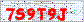
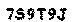
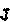

(Sponsors) Get started learning Python with DataCamp's free Intro to Python tutorial. Learn Data Science by completing interactive coding challenges and watching videos by expert instructors. Start Now!
Decoding captchas using Python
Updated on Oct 09, 2020
As everyone knows, captchas are those annoying things like "Enter the letters that you see on the image" on the registration or feedback pages.
CAPTCHA is designed so that a human could read the text without difficulty, while a machine can not. But on practice this usually does not work, because almost every simple text captcha posted on the site gets cracked after less then several months. Then comes ReCaptcha v2 which is way more complicated, but still it can be bypassed in automatic mode.
While this struggle between captcha makers and captcha solvers seems like endless, different people are interested in automatic captcha solution in order to maintain work of their software. Thats why in this particular article I will show how to crack text captchas using OCR method, as well as how to bypass complex Google ReCaptcha v2 with the help of real people.
All examples are written in Python 2.5 using the PIL library. It should also work in Python 2.6 and it was successfully tested in Python 2.7.3.
Python: www.python.org
PIL: www.pythonware.com/products/pil
Install them in the above order and you are ready to run the examples.
Also, in the examples I will rigidly set many values directly in the code. I have no goal of creating a universal captcha recognizer, but only to show how this is done.
CAPTCHA: what is it actually #
Mostly captcha is an example of one-way conversion. You can easily take a character set and get captcha from it, but not vice versa. Another subtlety - it should be easy for humans to read, but not amenable to machine recognition. CAPTCHA can be considered as a simple test such as "Are you human?" Basically, they are implemented as an image with some symbols or words.
They are used to prevent spam on many websites. For example, captcha can be found on the registration page of Windows Live ID.
You are shown the image and if you are a real person, then you need to enter its text in a separate field. Seems like a good idea that can protect from thousands of automatic registrations for spamming or distributing Viagra on forums, isn't it? The problem is that AI, and in particular image recognition methods, have undergone significant changes and are becoming very effective in certain areas. OCR (Optical Character Recognition) these days is pretty accurate and easily recognizes printed text. So captcha-makers decided to add a little color and lines to captchas to make them more difficult for the computer to solve, but without adding any inconvenience for users. This is a kind of arms race and, as usual, one group comes up with more powerful weapons for every defense made by another group. Defeating such a reinforced captcha is more difficult, but still possible. Plus, the image should remain fairly simple so as not to cause irritation in ordinary people.

This image is an example of a captcha that we will decrypt. This is a real captcha that is posted on a real site.
It's a fairly simple captcha, which consists of characters of the same color and size on a white background with some noise (pixels, colors, lines). You probably think that this noise on the background will make it difficult to recognize, but I will show how easy it is to remove it. Although this is not a very strong captcha, it is a good example for our program.
How to find and extract text from images #
There are many methods for determining the location of text on the image and its extraction. You can google and find thousands of articles that explain new methods and algorithms for locating text.
In this example I will use color extraction. This is a fairly simple technique with which I got pretty good results.
For our examples, I will use a multi-valued image decomposition algorithm. In essence, this means that we first plot a histogram of the colors of the image. This is done by obtaining all the pixels on the image grouped by color, and then counting is performed for each group. If you look at our test captcha, you can see three primary colors:
White (background)
Gray (noise)
Red (text)
In Python, this will look very simple.
The following code opens the image, converts it to GIF (which is easier for us to work, because it has only 255 colors) and prints a histogram of colors:
1 2 3 4 5 6 | from PIL import Image
im = Image.open("captcha.gif")
im = im.convert("P")
print im.histogram()
|
As a result, we get the following:
1 2 3 4 5 6 7 8 9 10 11 12 13 14 15 16 17 18 19 | [0, 0, 0, 0, 0, 0, 0, 0, 0, 0, 0, 0, 0, 0, 0, 0, 0, 0, 0, 0, 0, 0, 0, 0, 0, 0, 0
, 0, 0, 0, 0, 0, 0, 0, 0, 0, 0, 0, 0, 0, 0, 0, 0, 1, 1, 0, 0, 0, 0, 0, 0, 0, 0,
1, 0, 0, 2, 0, 0, 0, 0, 1, 0, 0, 0, 0, 0, 2, 1, 0, 0, 0, 0, 0, 0, 0, 0, 0, 0, 1,
0, 0, 0, 0, 1, 0, 0, 0, 0, 0, 0, 2, 1, 0, 0, 0, 2, 0, 0, 0, 0, 1, 0, 1, 1, 0, 0
, 1, 0, 2, 0, 0, 0, 0, 0, 0, 0, 0, 0, 0, 0, 1, 2, 0, 0, 0, 1, 2, 0, 1, 0, 0, 1,
0, 2, 0, 0, 1, 0, 0, 2, 0, 0, 0, 0, 0, 0, 0, 0, 1, 0, 1, 0, 1, 0, 3, 1, 3, 3, 0,
0, 0, 0, 0, 0, 1, 0, 3, 2, 132, 1, 1, 0, 0, 0, 1, 2, 0, 0, 0, 0, 0, 0, 0, 15, 0
, 1, 0, 1, 0, 0, 8, 1, 0, 0, 0, 0, 1, 6, 0, 2, 0, 0, 0, 0, 18, 1, 1, 1, 1, 1, 2,
365, 115, 0, 1, 0, 0, 0, 135, 186, 0, 0, 1, 0, 0, 0, 116, 3, 0, 0, 0, 0, 0, 21,
1, 1, 0, 0, 0, 2, 10, 2, 0, 0, 0, 0, 2, 10, 0, 0, 0, 0, 1, 0, 625]
|
Here we see the number of pixels of each of the 255 colors on the image. You can see that white (255, the most recent) is found most often. It is followed by red (text). To verify this, we will write a small script:
1 2 3 4 5 6 7 8 9 10 11 12 13 14 | from PIL import Image
from operator import itemgetter
im = Image.open("captcha.gif")
im = im.convert("P")
his = im.histogram()
values = {}
for i in range(256):
values[i] = his[i]
for j,k in sorted(values.items(), key=itemgetter(1), reverse=True)[:10]:
print j,k
|
And we get the following data:
| Color | Number of pixels |
|---|---|
| 255 | 625 |
| 212 | 365 |
| 220 | 186 |
| 219 | 135 |
| 169 | 132 |
| 227 | 116 |
| 213 | 115 |
| 234 | 21 |
| 205 | 18 |
| 184 | 15 |
This is a list of the 10 most common colors on the image. As expected, white repeats most often. Then come gray and red.
Once we get this information, we create new images based on these color groups. For each of the most common colors, we create a new binary image (of 2 colors), where the pixels of this color are filled with black, and everything else is white.
Red has become the third among the most common colors, which means that we want to save a group of pixels with a color of 220. When I experimented, I found that the color 227 is pretty close to 220, so we will keep this group of pixels as well. The code below opens the captcha, converts it to GIF, creates a new image of the same size with a white background, and then goes through the original image in search of the color we need. If he finds a pixel with the color we need, then he marks that same pixel on the second image as black. Before shutting down, the second image is saved.
1 2 3 4 5 6 7 8 9 10 11 12 13 14 15 16 17 18 | from PIL import Image
im = Image.open("captcha.gif")
im = im.convert("P")
im2 = Image.new("P",im.size,255)
im = im.convert("P")
temp = {}
for x in range(im.size[1]):
for y in range(im.size[0]):
pix = im.getpixel((y,x))
temp[pix] = pix
if pix == 220or pix == 227: _# these are the numbers to get_
im2.putpixel((y,x),0)
im2.save("output.gif")
|
Running this piece of code gives us the following result.
| Original | Result |
|---|---|
|  |  |
On the picture you can see that we successfully managed to extract the text from the background. To automate this process, you can combine the first and second script.
I hear you asking: "What if the text on the captcha is written in different colors?". Yes, our technology can still work. Assume the most common color is the background color and then you can find the colors of the characters.
Thus, at the moment, we have successfully extracted text from the image. The next step is to determine if the image contains text. I will not write code here yet, because it will make understanding difficult, while the algorithm itself is quite simple.
1 2 3 4 5 6 7 | for each binary image:
for each pixel in the binary image:
if the pixel is on:
if any pixel we have seen before is next to it:
add to the same set
else:
add to a new set
|
At the output, you will have a set of character boundaries. Then all you need to do is to compare them with each other and see if they go sequentially. If yes, then it's a jackpot since you have correctly identified the characters that go next. You can also check the sizes of the received areas or simply create a new image and show it (applying the show () method to the image) to make sure the algorithm is accurate.
1 2 3 4 5 6 7 8 9 10 11 12 13 14 15 16 17 18 19 20 21 22 23 24 25 26 27 28 29 30 31 32 33 34 35 36 37 38 39 40 41 42 43 | from PIL import Image
im = Image.open("captcha.gif")
im = im.convert("P")
im2 = Image.new("P",im.size,255)
im = im.convert("P")
temp = {}
for x in range(im.size[1]):
for y in range(im.size[0]):
pix = im.getpixel((y,x))
temp[pix] = pix
if pix == 220or pix == 227: # these are the numbers to get_
im2.putpixel((y,x),0)
# new code starts here_
inletter = False
foundletter=False
start = 0
end = 0
letters = []
for y in range(im2.size[0]): _# slice across_
for x in range(im2.size[1]): _# slice down_
pix = im2.getpixel((y,x))
if pix != 255:
inletter = True
if foundletter == Falseand inletter == True:
foundletter = True
start = y
if foundletter == Trueand inletter == False:
foundletter = False
end = y
letters.append((start,end))
inletter=False
print letters
|
As a result, we got the following:
[(6, 14), (15, 25), (27, 35), (37, 46), (48, 56), (57, 67)]
These are the horizontal positions of the beginning and end of each character.
AI and vector space for pattern recognition #
Image recognition can be considered the greatest success of modern AI, which allowed it to be embedded in all types of commercial applications. A great example of this is zip codes. In fact, in many countries they are read automatically, because teaching a computer to recognize numbers is a fairly simple task. This may not be obvious, but pattern recognition is considered an AI problem, albeit a very highly specialized one.
Almost the first thing that you encounter when meeting with AI in pattern recognition is neural networks. Personally, I have never had success with neural networks in character recognition. I usually teach it 3-4 characters, after which the accuracy drops so low that it would be higher then guessing the characters randomly. Fortunately, I read an article about vector-space search engines and found them an alternative method for classifying data. In the end, they turned out to be the best choice, because:
- They do not require extensive study.
- You can add / remove incorrect data and immediately see the result
- They are easier to understand and program.
- They provide classified results so you can see the top X matches.
- Can't recognize something? Add this and you will be able to recognize it instantly, even if it is completely different from something seen earlier.
Of course, there is no free cheese. The main disadvantage in speed. They can be much slower than neural networks. But I think that their advantages still outweigh this drawback.
If you want to understand how vector space works, then I advise you to read the Vector Space Search Engine Theory. This is the best I have found for beginners and I built my image recognition based on this document. Now we have to program our vector space. Fortunately, this is not at all difficult. Let's get started.
1 2 3 4 5 6 7 8 9 10 11 12 13 14 15 16 | import math
class VectorCompare:
def magnitude(self,concordance):
total = 0
for word,count in concordance.iteritems():
total += count \*\* 2
return math.sqrt(total)
def relation(self,concordance1, concordance2):
relevance = 0
topvalue = 0
for word, count in concordance1.iteritems():
if concordance2.has\_key(word):
topvalue += count \* concordance2[word]
return topvalue / (self.magnitude(concordance1) \* self.magnitude(concordance2))
|
This is an implementation of Python vector space in 15 lines. Essentially, it just takes 2 dictionaries and gives a number from 0 to 1, indicating how they are connected. 0 means that they are not connected and 1 means that they are identical.
Training #
The next thing we need is a set of images with which we will compare our characters. We need a learning set. This set can be used to train any kind of AI that we will use (neural networks, etc.).
The data used can be crucial for the success of recognition. The better the data, the greater the chance of success. Since we plan to recognize a specific captcha and can already extract symbols from it, why not use them as a training set?
This is what I did. I downloaded a lot of generated captcha and my program broke them into letters. Then I collected the received images in a collection (group). After several attempts, I had at least one example of each character generated by the captcha. Adding more examples would increase recognition accuracy, but this was enough for me to confirm my theory.
1 2 3 4 5 6 7 8 9 10 11 12 13 14 15 16 17 18 19 20 21 22 23 24 25 26 27 28 29 30 31 32 33 34 35 36 37 38 39 40 41 42 43 44 45 46 47 48 49 50 51 52 | from PIL import Image
import hashlib
import time
im = Image.open("captcha.gif")
im2 = Image.new("P",im.size,255)
im = im.convert("P")
temp = {}
print im.histogram()
for x in range(im.size[1]):
for y in range(im.size[0]):
pix = im.getpixel((y,x))
temp[pix] = pix
if pix == 220or pix == 227: # these are the numbers to get
im2.putpixel((y,x),0)
inletter = False
foundletter=False
start = 0
end = 0
letters = []
for y in range(im2.size[0]): _# slice across_
for x in range(im2.size[1]): _# slice down_
pix = im2.getpixel((y,x))
if pix != 255:
inletter = True
if foundletter == Falseand inletter == True:
foundletter = True
start = y
if foundletter == Trueand inletter == False:
foundletter = False
end = y
letters.append((start,end))
inletter=False
# New code is here. We just extract each image and save it to disk with
# what is hopefully a unique name
count = 0
for letter in letters:
m = hashlib.md5()
im3 = im2.crop(( letter[0] , 0, letter[1],im2.size[1] ))
m.update("%s%s"%(time.time(),count))
im3.save("./%s.gif"%(m.hexdigest()))
count += 1
|
At the output, we get a set of images in the same directory. Each of them is assigned a unique hash in case you process several captchas.
Here is the result of this code for our test captcha:
 |
 |
 |
|---|
You decide how to store these images, but I just placed them in a directory with the same name that is on the image (symbol or number).
Putting it all together #
Last step. We have text extraction, character extraction, recognition technique and training set.
We get an image of captcha, select text, get characters, and then compare them with our training set. You can download the final program with a training set and a small number of captchas at this link.
Here we just load the training set to be able to compare our captchas with it:
1 2 3 4 5 6 7 8 9 10 11 12 13 14 15 16 17 18 19 20 | def buildvector(im):
d1 = {}
count = 0
for i in im.getdata():
d1[count] = i
count += 1
return d1
v = VectorCompare()
iconset =
['0','1','2','3','4','5','6','7','8','9','0','a','b','c','d','e','f','g','h','i','j','k','l','m','n','o','p','q','r','s','t','u','v','w','x','y','z']
imageset = []
for letter in iconset:
for img in os.listdir('./iconset/%s/'%(letter)):
temp = []
if img != "Thumbs.db":
temp.append(buildvector(Image.open("./iconset/%s/%s"%(letter,img))))
imageset.append({letter:temp})
|
And then all the magic is happening. We determine where each character is and check it with our vector space. Then we sort the results and print them.
1 2 3 4 5 6 7 8 9 10 11 12 13 14 15 | count = 0
for letter in letters:
m = hashlib.md5()
im3 = im2.crop(( letter[0] , 0, letter[1],im2.size[1] ))
guess = []
for image in imageset:
for x,y in image.iteritems():
if len(y) != 0:
guess.append( ( v.relation(y[0],buildvector(im3)),x) )
guess.sort(reverse=True)
print"",guess[0]
count += 1
|
Conclusions about solving simple captchas #
Now we have everything we need and we can try to launch our machine.
The input file is captcha.gif. Expected Result: 7s9t9j
1 2 3 4 5 6 7 | python crack.py
(0.96376811594202894, '7')
(0.96234028545977002, 's')
(0.9286884286888929, '9')
(0.98350370609844473, 't')
(0.96751165072506273, '9')
(0.96989711688772628, 'j')
|
Here we can see the alleged symbol and the degree of confidence that it's it (from 0 to 1).
So, it seems that we really succeeded!
In fact, on test captchas this script will produce a successful result in about only 22% of cases.
1 2 3 4 5 | python crack\_test.py
Correct Guesses - 11.0
Wrong Guesses - 37.0
Percentage Correct - 22.9166666667
Percentage Wrong - 77.0833333333
|
Most of incorrect results are related to incorrect recognition of the digit "0" and the letter "O", which is not really unexpected, since even people often confuse them. Also we still have a problem with breaking captcha into characters, but this can be solved simply by checking the result of breaking and finding a middle ground.
However, even with such a not-so-perfect algorithm, we can correctly solve every fifth captcha and it will be faster than a real person could solve one.
Running this code on a Core 2 Duo E6550 gives the following results:
1 2 3 | real 0m5.750s
user 0m0.015s
sys 0m0.000s
|
With our 22% success rate, we can solve about 432,000 captcha per day and get 95,040 correct results. Imagine using multithreading.
What about ReCaptcha? #
It was all about really plain captchas. What about ReCaptcha v2 which is used now more often?
Well, things are more complicated here, since even if creating a CNN (Convolutional Neural Network) for solving ReCaptcha is possible, it would be extremelly expensive to develop and maintain such a project, since Google adds more image types to it on a regular basis.
That's why more efficient solution would be to use an online captcha-solving service as, for example, 2captcha.com
This particular service is really a good example, since it has its significant pros among others, such as:
high speed of solution (17 seconds for normal (graphic and text) captchas and 33 seconds for ReCaptcha)
ready libraries for many popular programming languages
fixed price rates (which don't change along with increasing server's load)
high accuracy (up to 99%, depending on captcha type)
money-back guarantee for incorrect answers
possibility to solve vast volume of captchas (more than 10,000 every minute)
referal program for soft-developers, customers and workers, which allows to get up to 15% of all spendings of referred users.
The main idea is that you can solve ReCaptcha (as well as other complicated captchas) via simple API anytime and in any number.
How to use 2captcha.com for solving ReCaptcha (with example) #
To solve a ReCaptcha using 2captcha there is simple algorithm:
The target site open credentials (recaptcha's "site key", site url, optional: proxy IP) are copied by you (client) and submitted to the 2captcha service. You find them using simple web developer tools.
A worker at the service's end solves reCaptcha with the provided credentials.
In 10-30 seconds you request an answer as a g-recaptcha-response token.
You use this g-recaptcha-response token inside of the target site [submit] form with recaptcha.
It would be important to tell that all these steps you can do without imitating a browser, but just by pure http GET and POST requests, and I'll show you how.
Get credentials #
2captcha service requires us to provide it with the following parameters:
| Request parameter | Value |
|---|---|
| key | SERVICE_KEY (2 captchas service key) |
| googlekey | data-sitekey attribute value in g-recaptcha block element |
| pageurl | http://testing-ground.scraping.pro/recaptcha (url of a target page with recaptcha) |
| method | userrecaptcha |
So, we are going to the site page and inspect the recaptcha html code in web developer tools (hit F12). There we find and get the data-sitekey attribute value in the g-recaptcha block. Its value is a constant for a single site, the site_key value provided by Google.
We select it and right-click to copy.
Now we have gotten the googlekey parameter (google site_key for this particular site): 6Lf5CQkTAAAAAKA-kgNm9mV6sgqpGmRmRMFJYMz8
SERVICE_KEY for the following requests is taken from the 2captcha account settings.
Submit to service a request for recaptcha solution #
Now we make a GET or POST request to the 2captcha service (in.php endpoint) with the above-mentioned parameters:
http://2captcha.com/in.php?key=SERVICE_KEY&method=userrecaptcha&googlekey=6Lf5CQkTAAAAAKA-kgNm9mV6sgqpGmRmRMFJYMz8&pageurl=http://testing-ground.scraping.pro/recaptcha
1 2 3 4 5 6 7 8 9 10 11 12 | import requests
from time import sleep, time
service\_key = 'xxxxxxxxxxxxxx'; # 2captcha service key
google\_site\_key = '6LfxxxxxxxxxxxxxxxxxxxxxFMz856JY'
pageurl = 'http://testing-ground.scraping.pro/recaptcha'
url = "http://2captcha.com/in.php?key=" + service\_key +"&method=userrecaptcha&googlekey=" + google_site_key + "&pageurl=" + pageurl
resp = requests.get(url)
if resp.text[0:2] != 'OK':
quit('Service error. Error code:' + resp.text)
captcha_id = resp.text[3:]
|
The 2captcha service renders a response in the form of: OK|Captcha_ID where Captcha_ID – is the id of the recaptcha in the system.
Receive valid token #
Now we need to wait till a worker solves the recaptcha and Google returns a valid token to the service. To do this we make a request to the 2captcha service every 5 seconds until we get a valid token. Take a look on a request to res.php endpoint with all the necessary parameters:
http://2captcha.com/res.php?key=SERVICE_KEY&action=get&id=Captcha_ID
fetch_url = "http://2captcha.com/res.php?key="+ service_key + "&action=get&id=" + captcha_id
1 2 3 4 5 6 7 8 9 10 | fetch_url = "http://2captcha.com/res.php?key="+ service_key + "&action=get&id=" + captcha_id
for i in range(1, 10):
sleep(5) # wait 5 sec.
resp = requests.get(fetch_url)
if resp.text[0:2] == 'OK':
break
print('Google response token: ', resp.text[3:])
|
Submit google's token in form #
Now we submit the form with the g-recaptcha-response token.
This token is checked on a server of a target site. The site's script sends a request to Google to check the g-recaptcha-response token's validity: is it true or not, pertaining to that site or not, etc. At our Captcha testing ground this token is checked before the form submission. It is done by passing a token through ajax (xhr) request to proxy.php which, in turn, inquires of google if the site is verified and returns google's response.
proxy.php
1 2 3 4 5 | header('Content-type: application/json');
$response = $_GET['response'];
$secret = "xxxxxxxxxxxxxxxxxxxxxxxxxxxxxx";
$json = file_get_contents('https://www.google.com/recaptcha/api/siteverify?secret=' . $secret . '&response=' . $response);
echo $json;
|
Python code to send g-recaptcha-response to proxy.php for site verification by google #
1 2 3 | verify_url = "http://testing-ground.scraping.pro/proxy.php?response=" + resp.text[3:]
resp = requests.get(verify_url)
print(resp.text)
|
The script should result in a json:
1 2 3 | { "success": true,
"challenge\_ts": "2016-09-29T09:25:55Z",
"hostname": "testing-ground.scraping.pro"}
|
Python code of a form submitting with g-recaptcha-response: #
1 2 3 4 | submit_url = "http://testing-ground.scraping.pro/recaptcha
headers = {'user-agent': 'Mozilla/5.0 (Windows NT 6.1; Win64; x64) AppleWebKit/537.36 (KHTML, like Gecko) Chrome/52.0.2743.116 Safari/537.36'}
payload = {'submit': 'submit', 'g-recaptcha-response': resp.test[3:] }
resp = requests.post(submit_url, headers=headers, data=payload)
|
The whole code #
1 2 3 4 5 6 7 8 9 10 11 12 13 14 15 16 17 18 19 20 21 22 23 24 25 26 27 28 29 | import requests
from time import sleep, time
start_time = time()
# send credentials to the service to solve captcha
# returns service's captcha_id of captcha to be solved
url="http://2captcha.com/in.php?key=1069c3052adead147d1736d7802fabe2&method=userrecaptcha&googlekey=6Lf5CQkTAAAAAKA-kgNm9mV6sgqpGmRmRMFJYMz8&pageurl=http://testing-ground.scraping.pro/recaptcha"
resp = requests.get(url)
if resp.text[0:2] != 'OK':
quit('Error. Captcha is not received')
captcha_id = resp.text[3:]
# fetch ready 'g-recaptcha-response' token for captcha_id
fetch_url = "http://2captcha.com/res.php?key=1069c3052adead147d1736d7802fabe2&action=get&id=" + captcha_id
for i in range(1, 20):
sleep(5) # wait 5 sec.
resp = requests.get(fetch_url)
if resp.text[0:2] == 'OK':
break
print('Time to solve: ', time() - start_time)
# final submitting of form (POST) with 'g-recaptcha-response' token
submit_url = "http://testing-ground.scraping.pro/recaptcha"
# spoof user agent
headers = {'user-agent': 'Mozilla/5.0 Chrome/52.0.2743.116 Safari/537.36'}
# POST parameters, might be more, depending on form content
payload = {'submit': 'submit', 'g-recaptcha-response': resp.text[3:] }
resp = requests.post(submit_url, headers=headers, data=payload)
|
Limitations #
The received g-recaptcha-response token (from 2captcha service) is valid for only 120 seconds (2 min), so you are responsible to apply it on the target site [submit] form within that time limit.
Other language solutions #
You might also look at other language options for how to apply 2captcha service:
C# code (code for the same testing-ground page)
Java example (with Russian comments only)
Afterword #
Here I showed you different approaches to solve captchas in automatic mode, which allows to perform wide variety of actions online. While the it is up to person — in what way to use this knowlege, a development of defensive methods agains unwanted online activity makes the appropriate development of cracking methods inevitable.
Other Tutorials (Sponsors)
This site generously supported by DataCamp. DataCamp offers online interactive Python Tutorials for Data Science. Join over a million other learners and get started learning Python for data science today!

View Comments